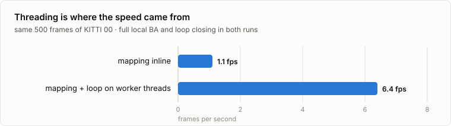
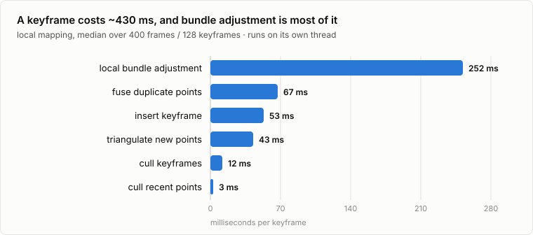
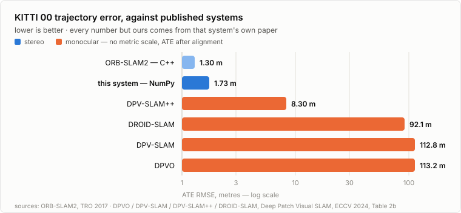

How to read this. Chapters 3 to 10 follow a single camera frame through the system in the order the code actually runs. Every listing is pulled out of the repository when this document is built, so what you read here is what runs. Boxes marked Why this way explain a design choice you will be asked about; boxes marked Bug story are real failures from this project — they are the most useful interview material in the document. Each chapter ends with questions you should be able to answer out loud.
A camera on a moving car produces images. We want two things out of them: where the camera is at every instant, and a map of the world it is looking at. Doing both at once, without a prior map and without GPS, is Simultaneous Localization and Mapping.
The naive approach is visual odometry: match features between consecutive frames, compute the motion between them, and chain the motions together. Each step carries a small error. Chaining multiplies those errors together, so position error grows without bound — and the error is in the pose, which means it also rotates everything you estimate afterwards. On a 3.7 km sequence a 1% drift rate is tens of metres by the end.
SLAM fixes this by keeping a map and using it. If the camera sees a wall it already has points for, and those points are still in the map with good positions, the pose can be computed against the map rather than against the previous frame. The error then does not compound: it is bounded by how well the map is known in the area you are in.
ORB-SLAM3's paper makes this the organising idea of the whole field, and it is the clearest way to remember what the parts of this system do:
| Association | What it means | Where it lives here |
|---|---|---|
| Short-term | Match to the last few frames. Pure odometry. Always drifts. | Tracker._search_last — the constant-velocity step |
| Mid-term | Match to map elements that are still geometrically close, i.e. the accumulated drift is small enough that projection works. This is what kills drift. | Tracker._track_local_map and local bundle adjustment |
| Long-term | Recognise a place regardless of drift, using appearance. Fixes the global shape of the trajectory. | LoopCloser — bag of words, then a pose graph |
A system with only short-term association is a visual odometry system, whatever it calls itself. The single most important sentence in this document: the map must feed back into pose estimation. An earlier version of this project built a perfectly good map and never used it for tracking — it looked like SLAM from the outside and drifted like odometry, because it was odometry.
A single camera cannot tell a small nearby object from a large distant one: monocular SLAM recovers the world only up to an unknown scale factor, and that scale itself drifts. Two cameras a known distance apart (the baseline, 53.7 cm on the KITTI car) fix the scale from the first frame. That one fact removes an entire class of problems: no scale drift, no need for a delicate initialisation procedure, and loop closure becomes a rigid-body correction instead of a 7-degree-of-freedom similarity correction.
This system is not a new algorithm. It is a careful implementation of a well-understood one, and every component has a source. Being able to say which idea came from where — and why it is there — is most of what “I built this” means.
| Paper | The idea we used | Where it lives |
|---|---|---|
| ORB-SLAM Mur-Artal, Montiel, Tardós, TRO 2015 |
Keyframe SLAM rather than filtering; the same ORB features for tracking, mapping and place recognition; the covisibility graph; the essential graph for pose-graph optimisation; generous keyframe insertion followed by culling. | map/structure.py, tracking.py |
| ORB-SLAM2 Mur-Artal, Tardós, TRO 2017 |
Stereo keypoints (u, v, uR); the close/far split at 35 baselines; map initialisation from the very first stereo frame; SE(3) loop closing; local BA with fixed outer keyframes. | features/orb.py, mapping.py |
| ORB-SLAM3 Campos et al., TRO 2021 |
The short/mid/long-term framing used in Chapter 1; place recognition that scores candidates over covisible groups instead of single keyframes. | loop.py |
| DBoW2 Gálvez-López, Tardós, TRO 2012 |
A vocabulary tree over binary descriptors, TF-IDF weighting, L1 scoring, and an inverted file so querying does not touch every keyframe. | features/vocab.py |
| Bundle Adjustment — A Modern Synthesis Triggs et al., 2000 |
The Schur complement trick that makes BA tractable, and robust kernels in the normal equations. | optimize/solver.py |
| Closed-form absolute orientation Horn, 1987 |
Least-squares rigid transform between two sets of 3-D points, in closed form. | geometry/align.py — loop verification and ATE alignment |
| Multiple View Geometry Hartley & Zisserman |
DLT triangulation, the fundamental matrix, epipolar constraints. | geometry/triangulate.py, mapping.py |
| KITTI benchmark Geiger et al., 2012 |
The dataset, and the relative-drift metric over 100–800 m segments. | eval.py, data/kitti.py |
| TUM RGB-D benchmark Sturm et al., 2012 |
Absolute trajectory error as RMSE after rigid alignment. | eval.py |
Two pieces of mathematics carry the entire system: how a 3-D point becomes pixels, and how to represent and update a camera pose. Everything else is bookkeeping around them.
A point in camera coordinates Xc = (X, Y, Z) projects to pixels by
with focal lengths fx, fy in pixels and principal point (cx, cy). On KITTI sequence 00, fx = 718.856 px and the images are 1241 × 376.
The two KITTI cameras are rectified: they have the same intrinsics and are displaced along the x axis by the baseline b = 0.537 m, so the same world point lands on the same image row in both. Its horizontal position in the right image is
so a measurement is the triple (u, v, uR) — ORB-SLAM2 calls this a stereo keypoint. The difference d = u − uR is the disparity, and inverting the equation gives depth directly:
Both live in one small class, and the projection used by the optimizer is the stereo one:
{{func:src/slam/data/frame.py:project_stereo}}Because depth error grows with Z², a point at 5 m is a precise measurement and a point at 80 m is barely more than a bearing. ORB-SLAM2's answer, which we copy, is the close/far split at Z < 35b ≈ 18.8 m: close points are trusted enough to create map points immediately from one frame, far points only through triangulation across several views, and the keyframe rule watches the count of close points (Chapter 7).
A camera pose is a rotation and a translation. We store it as a 4 × 4 matrix taking world coordinates to camera coordinates,
| R | t |
| 0 | 1 |
The subtlety: the set of valid rotations is not a vector space. You cannot optimise by adding a correction to R, because R + Δ is generally not a rotation any more. The standard fix is to parameterise updates in the Lie algebra: a six-vector ξ = (ω, v) — three for rotation, three for translation — mapped onto the manifold by the exponential map, and applied on the left:
The optimizer therefore always works with a small six-vector, and the pose is guaranteed to stay a valid pose because exp() returns a rotation by construction. Our implementation is the textbook Rodrigues formula:
{{func:src/slam/geometry/lie.py:exp_se3}}and the inverse map, used to turn a relative pose into a twist:
{{func:src/slam/geometry/lie.py:log_se3}}Floating-point round-off means a pose that has been multiplied a few thousand times is no longer exactly orthonormal. That is normally harmless. It was not harmless here, because the constant-velocity model computes T @ invert(T_prev), and invert() uses RT as R−1 — which is only true for an exact rotation. Feed a slightly-off matrix in, get a worse one out, use it to predict, repeat. The error tripled every frame: 3 × 10−14 at frame 5, 10−6 at frame 25, 5 × 10−2 at frame 37, tracking dead at frame 41.
Two fixes, both kept. The velocity is now stored as a twist, so prediction goes through exp() and cannot leave the manifold. And every estimator projects its input poses back onto SO(3) first — which is exactly what g2o gets for free by storing rotations as quaternions and re-normalising.
Four objects. Everything the system does is an operation on these, so it is worth knowing them precisely before following the execution flow.
| Object | What it is |
|---|---|
| Frame | One stereo image pair plus what we extracted from it: keypoints, descriptors, octaves, u_right, and a pose. Cheap and discarded after use. |
| MapPoint | A 3-D point in the world: position, the keyframes that observe it and at which keypoint index, a representative descriptor, a mean viewing direction, a valid distance range, and the counters that decide whether it survives culling. |
| KeyFrame | A frame promoted to permanent status: its pose, its features, its map points, plus its links — covisibility weights, a spanning-tree parent, and loop edges. |
| Map | The set of keyframes and points, a lock, and a version counter. |
Every map point maintains a mean viewing direction and a scale-invariance distance range. They exist so that a later frame can ask a cheap question — “could I even see this point from here, and at what pyramid level would it appear?” — without trying to match it:
{{func:src/slam/map/structure.py:update_normal_and_depth}}The range comes from the octave the point was detected at: a point found at pyramid level l at distance d would be detectable between roughly d·1.2l and that divided by 1.27. Inverting that relation predicts the level at which it should appear now, which tells the matcher which octaves to search:
{{func:src/slam/features/orb.py:predict_level}}Both feed the frustum test, which is used identically by tracking, by fusion and by loop closing:
{{func:src/slam/map/structure.py:visible}}Two keyframes are covisible if they observe the same map points; the edge weight is how many. This graph is the backbone of the system:
The full covisibility graph is dense — thousands of keyframes, each linked to dozens. Optimising all of it after a loop closure would be needlessly slow, and optimising only the spanning tree would be too weak. The essential graph is ORB-SLAM's compromise: keep the tree so the graph stays connected, keep only strong edges, add the loop. That is the difference between a pose graph that solves in a second and one that does not.
The pipeline starts here. Everything downstream sees only keypoints and descriptors — the images are never looked at again.
ORB gives a corner position, a pyramid level (octave), an orientation, and a 256-bit binary descriptor that can be compared with an XOR and a bit count. We ask OpenCV for twice the budget and then keep the strongest per grid cell, because a natural detector piles features onto whatever is most textured — a tree, a fence — and leaves the rest of the image empty. Spread features mean better-conditioned geometry:
{{func:src/slam/features/orb.py:_bucket}}Because the pair is rectified, the search for a keypoint's stereo partner is one-dimensional: same row, to the left, within a disparity range. Three filters do the work — a row band scaled by the octave, an octave-similarity test, and a disparity range — and only then do we compare descriptors:
{{func:src/slam/features/orb.py:match_stereo}}The descriptor match gives an integer pixel. That is not accurate enough: one pixel of disparity error at 20 m is about 1.4 m of depth. So each match is refined by a sliding sum-of-absolute-differences window on the keypoint's own pyramid level, followed by a parabola fit through the best three scores — giving a subpixel u_right:
{{func:src/slam/features/orb.py:_subpixel}}Notice the shape of that code: no Python loop over keypoints. Patches for every match at a given pyramid level are gathered with one fancy-index operation into an array of shape (matches, shifts, 11, 11), and the SAD scores for all of them are one abs().sum(). This is the pattern used everywhere in this codebase — the loop is over the eight pyramid levels, not over the two thousand features. It is the reason a pure-NumPy SLAM system runs at all.
Three small functions in features/matcher.py are reused by tracking, mapping and loop closing. First, Hamming distance over whole arrays via a 256-entry popcount table:
{{func:src/slam/features/matcher.py:hamming}}Second, a way to turn "for each item, a variable-length list of candidates" into flat index arrays — the idiom that replaces nested loops throughout:
{{func:src/slam/features/matcher.py:ragged_pairs}}Third, the mutual-best-match rule, with an optional Lowe-style ratio test:
{{func:src/slam/features/matcher.py:one_to_one}}Monocular SLAM needs a careful two-view initialisation. Stereo does not: the first frame already contains metric depth, so the map exists after one image pair.
{{func:src/slam/tracking.py:_initialize}}Every keypoint with a valid stereo match is unprojected into the world and becomes a map point; the frame becomes keyframe 0, which is also the origin of the world frame and the one pose that is never optimised — it fixes the gauge (see Chapter 8). On KITTI 00 this yields about 1150 points immediately.
The unprojection is the stereo equations of Chapter 3, applied to an index array:
{{func:src/slam/tracking.py:unproject}}This is the per-frame hot path, and it runs in the order below. Read Tracker._track as the table of contents for this chapter.
{{func:src/slam/tracking.py:_track}}The cheapest useful prior is that the camera keeps doing what it was doing. We store the last frame-to-frame motion as a twist and apply it to the last pose:
{{func:src/slam/tracking.py:_predict}}Before that, the last frame's pose is re-anchored on its reference keyframe. This matters: bundle adjustment or a loop closure may have moved that keyframe since, and the velocity model must be measured against the corrected world, not a stale one.
{{func:src/slam/tracking.py:_update_last_frame}}Each map point seen in the last frame is projected into the predicted pose and searched for in a window around its projection. Two details make this reliable. The search radius scales with the octave, because a feature detected at a coarse level is intrinsically less well localised. And the range of octaves searched depends on the direction of travel: driving forward, a point's scale can only grow, so we search from its last octave upward.
{{func:src/slam/tracking.py:_search_last}}The matches are then filtered by an orientation-consistency histogram — genuine matches share a common rotation between the two frames, so matches outside the three dominant bins are discarded:
{{func:src/slam/features/matcher.py:rotation_consistent}}With 3-D points fixed and 2-D/3-D measurements in hand, the pose is the solution of a small non-linear least squares problem — motion-only bundle adjustment, derived in Chapter 8. In code it is one call plus bookkeeping of which observations turned out to be outliers:
{{func:src/slam/tracking.py:_optimize_pose}}Matching only the last frame's points is still short-term association, so drift would still accumulate. The fix is to pull in the part of the map that should be visible now. K1 is the set of keyframes that share points with the current frame; K2 adds one covisible neighbour, one child and the parent of each, which extends the window without exploding it:
{{func:src/slam/tracking.py:_update_local_keyframes}}All points of those keyframes that are not already matched are put through the frustum test of Chapter 4, and the survivors are searched for with a radius that depends on the viewing angle — a point seen straight-on is predicted more precisely than one seen obliquely:
{{func:src/slam/tracking.py:_search_local_points}}Then the pose is optimised a second time, now against several hundred map points from many keyframes. This second optimisation is the mid-term association that keeps the system from drifting, and it is what separates this from visual odometry.
Keyframes are inserted generously and culled later. The conditions are ORB-SLAM2's, including the stereo one that matters on a road: if the number of tracked close points falls below 100 while more than 70 untracked close points are available, the camera is moving into new nearby structure and needs a keyframe regardless of how well tracking is going.
{{func:src/slam/tracking.py:_need_keyframe}}Creating one also creates map points from the closest stereo keypoints — nearest first, always the close ones, and at least a hundred:
{{func:src/slam/tracking.py:_create_keyframe}}Every frame stores its pose relative to its reference keyframe, not as an absolute pose. When bundle adjustment or a loop closure moves the keyframes, the whole trajectory moves with them for free. Storing absolute per-frame poses — which an earlier version of this project did — means the trajectory you print is the one before all your optimisations, and none of the corrections ever show up in the output.
Both bundle adjustment problems in this system minimise the same thing: the disagreement between where map points should appear and where they were measured. This chapter derives it once, in the form the code implements.
For an observation of point Xw in the camera with pose Tcw, measured at the stereo keypoint z = (u, v, uR):
and we minimise the weighted sum of squares over all observations, with a robust kernel ρ:
The information Σ−1 is a scalar per observation: a keypoint found at octave l is localised to about 1.2l pixels, so its weight is 1/1.22l. A monocular keypoint — no stereo match — simply has its third residual row zeroed, which is how one code path serves both cases:
{{func:src/slam/optimize/solver.py:_project}}Differentiating the projection with respect to the camera-frame point gives the 3 × 3 block visible in the listing above:
| ∂πs |
| ∂Xc |
|
0 | −
|
||||
| 0 |
|
−
|
||||
|
0 | −
|
For the pose we need the derivative of the point with respect to a left perturbation. Using exp(ξ) ≈ I + ξ∧ for small ξ = (ω, v):
and with respect to the point itself, ∂Xc/∂Xw = R. Chaining gives the two Jacobian blocks the solver assembles: Jpose = (∂π/∂Xc)·[−[Xc]× | I] and Jpoint = (∂π/∂Xc)·R.
Wrong matches are inevitable, and a squared cost lets one bad match at 40 px dominate a hundred good ones at 1 px. The Huber kernel makes the cost linear beyond a threshold δ, which in iteratively reweighted least squares is just a per-observation weight δ/‖r‖. The thresholds are the 95th percentile of a χ² distribution: 5.991 for a 2-DoF monocular residual, 7.815 for a 3-DoF stereo one.
{{func:src/slam/optimize/solver.py:_irls}}Points fixed, one pose free: six unknowns. Gauss–Newton on H δ = −g with H = Σ JTWJ and g = Σ JTWr. The structure that matters is the outer loop: four rounds, and after each one every observation is re-tested against χ², so an observation wrongly rejected early can come back once the pose has improved. The final round runs without the robust kernel, on inliers only.
{{func:src/slam/optimize/solver.py:motion_only_ba}}Now both poses and points are free. With N keyframes and P points the system is (6N + 3P) square — for a typical local window, 20 poses and 5000 points, that is 15120 × 15120. Solving it directly is hopeless; exploiting its structure is easy. Write the normal equations in blocks:
| Hpp | Hpx |
| HpxT | Hxx |
| δp |
| δx |
| gp |
| gx |
The key observation: Hxx is block-diagonal with 3 × 3 blocks, because no residual involves two different points. Inverting it costs nothing. Eliminating the points gives the reduced camera system, of size 6N only:
and the points follow by back-substitution:
Around that step sits Levenberg–Marquardt. bundle_adjust(poses, fixed, X, obs, cam, iters=(5, 10), stop=None) takes the poses with a boolean mask saying which are held fixed, the points, the observations, and an optional abort callback so the tracker can interrupt a long solve. Its loop is the classic damped one — take the step, accept it if the cost went down and relax the damping, otherwise reject it and damp harder:
{{lines:src/slam/optimize/solver.py:198-226}}Two stages, the first with the robust kernel and the second without; observations failing χ² after a stage are dropped for good. That is ORB-SLAM's structure exactly.
Gauge freedom: shifting every pose and every point by the same rigid transform does not change any residual, so the system is singular unless something is held still. In local BA the fixed set is the keyframes that observe local points but are not themselves being optimised, plus keyframe 0. In the loop-closure pose graph it is the matched keyframe. Forget this and the solver wanders.
A keyframe arrives on a queue. This thread turns it into map structure, and it is where most of the compute goes — about 430 ms per keyframe, of which bundle adjustment is 252.
{{func:src/slam/mapping.py:process}}New points are guilty until proven useful. A point must be found in at least a quarter of the frames that predicted it, and reach three observations within two keyframes of its birth, or it is deleted:
{{func:src/slam/mapping.py:_cull_points}}Only unmatched keypoints are candidates, and only against covisible keyframes with enough baseline. Candidate pairs come from the vocabulary (same node), then the epipolar constraint decides geometry: a point in one image must lie on a line in the other, and the line is given by the fundamental matrix
Surviving pairs are triangulated, but not blindly. The parallax between the two viewing rays is compared against the parallax the stereo rig alone would give; if the rig wins, the stereo unprojection is used instead of the two-view triangulation. Then the candidate must reproject within χ² in both keyframes, have positive depth in both, and be scale-consistent with the octaves it was seen at:
{{func:src/slam/mapping.py:_create_points}}The same physical corner is often created twice, from two keyframes that did not yet share a link. Fusion projects each point into a neighbour and merges it with whatever is already at that keypoint, keeping the one with more observations:
{{func:src/slam/mapping.py:fuse}}The window is the new keyframe plus its covisible neighbours; every point they see is optimised with them; and keyframes that see those points but are outside the window are included as fixed constraints — they pull, but they do not move. That is what stops the local window from drifting away from the rest of the map.
{{func:src/slam/mapping.py:_local_ba}}Note what happens around the solve: the problem is assembled under the map lock, the solve runs without it, and the write-back checks map.version and discards the result if a loop closure landed in the meantime. That is Chapter 11's subject.
Finally, any keyframe whose close points are 90% visible in at least three other keyframes at the same or finer scale is redundant and gets removed. This is what keeps the map from growing linearly when the car stops at a light:
{{func:src/slam/mapping.py:_cull_keyframes}}After several kilometres the estimate has drifted by metres. When the car re-enters a street it mapped twenty minutes ago, the system should notice and pull the whole trajectory back into shape. Three things must happen: recognise the place, prove it geometrically, and distribute the correction.
Each descriptor is pushed down a vocabulary tree — ten children per node, six levels, trained offline on millions of ORB descriptors — and lands in a leaf, its word. A keyframe becomes a sparse vector of word counts weighted by inverse document frequency, L1-normalised:
{{func:src/slam/features/vocab.py:transform}}Two keyframes are compared with the DBoW2 L1 score, which is 1 for identical vectors and 0 for vectors sharing nothing:
Querying every keyframe would be linear in map size, so an inverted file maps each word to the keyframes containing it, and only keyframes sharing enough words are scored. Scores are then accumulated over covisible groups, so a place seen by a cluster of keyframes beats a single lucky match:
{{func:src/slam/loop.py:candidates}}Appearance alone is not enough — brick walls repeat. A candidate must stay consistent across three consecutive keyframes before it is even considered:
{{func:src/slam/loop.py:_detect}}Both keyframes have 3-D points. Take matches between them, and find the rigid transform aligning the two point sets with Horn's closed-form solution inside a RANSAC loop; an inlier must reproject within χ² in both images. Twenty inliers are required.
{{func:src/slam/loop.py:_ransac_se3}}That transform gives a corrected pose for the current keyframe. All points of the loop side are then projected into it to gather many more matches, and a final motion-only BA at that corrected pose must keep at least 40 inliers. Only then is the loop accepted:
{{func:src/slam/loop.py:_verify}}The correction is applied in two stages. First locally and immediately: the current keyframe and its covisible neighbours are moved to the corrected pose, their points move with them, and duplicated points across the seam are fused. Then globally: an essential-graph pose-graph optimisation distributes the remaining error over the whole trajectory.
{{func:src/slam/loop.py:_correct}}The pose graph minimises, over all keyframe poses, the disagreement of each edge with its measured relative pose:
where T̂ji is what the relative pose was before the loop correction for ordinary edges, and the corrected value for the new loop links. Points are not in this optimisation at all — each one is carried along by its reference keyframe afterwards. That is what makes it fast enough to run on 1500 keyframes.
{{func:src/slam/loop.py:_optimize_essential_graph}}Edges are deduplicated by keyframe pair. After fusion, the two sides of the loop are not only linked by the new loop edges — they are now strongly covisible, so the ordinary covisibility rule proposes the same pairs, measured with the old drifted poses. Whichever is inserted first wins.
Inserting covisibility edges first meant the pose graph was told “these two keyframes are 5 m apart” by the drift and “they are here, together” by the loop, and it split the difference. ATE 5.23 m. Inserting loop links first: 0.96 m. Same code otherwise. ORB-SLAM inserts loop connections first for exactly this reason — and that ordering is worth a comment in any implementation, because nothing crashes when it is wrong.
Tracking must keep up with the camera. Mapping cannot. That is the whole reason for the threading, and it is where more than half of this system's speed came from.
Local mapping needs about 430 ms per keyframe and a keyframe arrives every three frames, so running it inline caps the system at roughly 1 fps. Moving it to a worker thread lets bundle adjustment — which is NumPy and SciPy, releasing the GIL for the large operations — overlap with the next frames' tracking. Same sequence, same work: 1.1 fps to 6.4 fps.

Both workers share one small base class — a queue, a condition variable, and an inline mode that keeps tests deterministic. The worker loop is the whole of it:
{{func:src/slam/worker.py:_run}}An exception inside process is printed rather than allowed to kill the thread: a dead mapping thread does not crash anything, it just silently stops the map growing, which is far harder to notice. In inline mode (--sync) the same queue is drained on the calling thread, so tests and debugging runs are deterministic.
The map is a graph of Python objects mutated by three threads. The rules we hold to:
Because local BA deliberately releases the lock to solve, a loop correction can land while it is solving. Its snapshot is then stale, and writing it back silently drags the just-corrected keyframes back to where they were. The fix is a version counter on the map: loop correction bumps it, and BA discards its result if the version changed. ORB-SLAM solves the same problem with an explicit stop-request handshake; the counter is the smaller thing that cannot deadlock.

Two optimisations were tried and rejected on measurement, which is worth as much as the two that were kept:
| Change | Result | Kept |
|---|---|---|
| Mapping + loop closing on worker threads | 1.1 → 6.4 fps | yes |
| Left/right ORB extraction in parallel | 51 → 43 ms per frame | yes |
| Dense Schur complement instead of sparse | 2408 → 2715 ms on real problems | no |
| Cap local BA at 12 covisible keyframes | no speed-up; ATE 1.73 → 3.33 m | no |
Two metrics, answering different questions. Quote the right one for the question you are asked.
Align the estimated trajectory to ground truth with a single rigid transform — Horn again — then take the RMS distance between corresponding camera centres. It answers: how far is the whole trajectory from the truth, as a shape? It is dominated by the largest global deformation, which is exactly what loop closure fixes.
{{func:src/slam/eval.py:ate_rmse}}Take every sub-path of length 100, 200, … 800 m, compare the relative motion over it with ground truth, and average. It answers: how much does the system drift per unit distance? A system with a perfect loop closure and terrible odometry can have good ATE and bad RPE.
{{func:src/slam/eval.py:kitti_rpe}}| Metric | This system | ORB-SLAM2 (C++) |
|---|---|---|
| ATE, KITTI 00 | 1.73 m | 1.30 m |
| Translation drift | 0.88 % | 0.70 % |
| Rotation drift | 0.32 °/100 m | 0.25 °/100 m |
| Lost frames | 0 | — |
| Speed | 6 fps | ~30 fps |

Be precise when you present this. The honest claim is not “we beat DROID-SLAM”. It is: a stereo system implemented in NumPy lands in the classical-stereo accuracy band on a 3.7 km sequence, within 33% of the C++ reference, and the learned monocular systems that publish KITTI 00 numbers are an order of magnitude behind on this sequence because scale is unobservable to them.
These are the stories to tell when someone asks what you learned. Each one has a symptom, a wrong first hypothesis, and a method that found the real cause.
Symptom. Tracking diverged around frame 40, every time, on every variant of the code.
Wrong hypotheses, in order. Bad local BA; bad triangulation; bad loop closure. All were disproved by ablation: the system diverged identically with local BA disabled, with triangulation disabled, and with fusion disabled.
Method that worked. Ask whether the data is consistent with itself. Estimate rotation between consecutive images using only the essential matrix — no depth, no map, nothing but the intrinsics — and compare with the rotation implied by the ground-truth poses. They disagreed by 2.7° per frame. Then correlate the image-derived yaw-rate profile against every ground-truth file in the dataset: frames 0–1100 matched sequence 01, not sequence 00.
Cause. Half the images came from a mislabelled mirror of the dataset. Every "SLAM bug" for days was the system honestly tracking a different drive.
Lesson, now encoded as a test. tests/test_kitti_integrity.py verifies that image motion agrees with ground truth before any SLAM code is blamed.
Symptom. After the data was fixed: smooth tracking for ~35 frames, then error growing geometrically — 0.07 m, 0.35 m, 0.75 m, 1.7 m, 4.3 m — with hundreds of healthy inliers the whole time.
Method. Instrument every boundary and ask which invariant breaks first. Measuring ‖RTR − I‖ per frame showed it tripling every frame from round-off at frame 5 to 5 × 10−2 by frame 37.
Cause and fix. The feedback loop in Chapter 3: velocity as a twist, and orthonormalisation inside the estimators.
Symptom. Loop detection was correct — all closures at genuine revisits — yet ATE got worse after closing them (5.23 m), with 0.75 m steps at the loop seams.
Method. Separate detection from correction. Verify against ground truth that each detected pair really is the same place (it was, to within 5 m), then look at where in the trajectory the error entered: not at the loop, but spread over the older half of the map — a correction being distributed wrongly.
Cause and fix. Edge insertion order in the essential graph, Chapter 10. ATE 5.23 → 0.96 m.
All three were found the same way: form one hypothesis, design a measurement that can disprove it, and only then change code. Ablations (turn one component off) and invariant checks (measure something that must be true) beat reading code and guessing, every time.
| File | Responsibility |
|---|---|
| data/frame.py | Frame container; StereoCalib: projection, unprojection, disparity→depth. |
| data/kitti.py | KITTI sequence reader: images, calibration, ground-truth poses. |
| geometry/lie.py | SO(3)/SE(3) exp, log, inverse, SO(3) projection. |
| geometry/align.py | Horn's closed-form rigid alignment. |
| geometry/triangulate.py | Batched DLT triangulation. |
| features/orb.py | ORB extraction, grid bucketing, stereo matching, SAD subpixel. |
| features/matcher.py | Hamming, ragged/window/node candidate generation, projection search, rotation check. |
| features/vocab.py | DBoW2 vocabulary: tree descent, TF-IDF, L1 score. |
| map/structure.py | MapPoint, KeyFrame, covisibility, spanning tree, Map, frustum test. |
| optimize/solver.py | Motion-only BA; sparse Schur-complement bundle adjustment. |
| optimize/pose_graph.py | Sparse SE(3) pose-graph optimisation. |
| tracking.py | Per-frame pose: predict, search, optimise, keyframe decision. |
| mapping.py | Local mapping thread: cull, triangulate, fuse, local BA, keyframe culling. |
| loop.py | Loop closing thread: BoW database, verification, correction, essential graph. |
| worker.py | Queue + thread base class shared by mapping and loop closing. |
| eval.py | ATE, KITTI RPE, KITTI-format trajectory output. |
| viz.py | Rerun logging: image, features, map, keyframes, trajectories. |
| Term | Meaning |
|---|---|
| ATE | Absolute trajectory error: RMS distance to ground truth after one rigid alignment. |
| Bag of words | An image summarised as a sparse histogram of quantised descriptors, for appearance-based place recognition. |
| Bundle adjustment | Joint non-linear least squares over camera poses and 3-D points, minimising reprojection error. |
| Covisibility graph | Keyframes linked when they observe the same points; weight = number shared. |
| Essential graph | Spanning tree + strong covisibility edges + loop edges; the sparse graph used for pose-graph optimisation. |
| Gauge freedom | The global transform to which the whole solution is invariant; removed by fixing at least one pose. |
| Huber kernel | Robust cost that grows linearly past a threshold, limiting the influence of outliers. |
| Keyframe | A frame kept permanently, carrying map structure; intermediate frames only localise. |
| Motion-only BA | Bundle adjustment with points fixed — solves for one camera pose. |
| Octave | Pyramid level a feature was detected at; sets its measurement uncertainty. |
| Parallax | Angle between the two rays seeing a point; small parallax means poorly determined depth. |
| RPE | Relative pose error: drift measured over fixed-length sub-paths. |
| Schur complement | Eliminating the point block of the normal equations to leave a system the size of the poses. |
| SE(3) / SO(3) | The groups of rigid motions / rotations in 3-D. |
| Twist | The six-vector (ω, v) parameterising a rigid motion in the Lie algebra. |
Built from the repository with scripts/build_notes.py; every code listing is extracted from src/slam/ at build time.